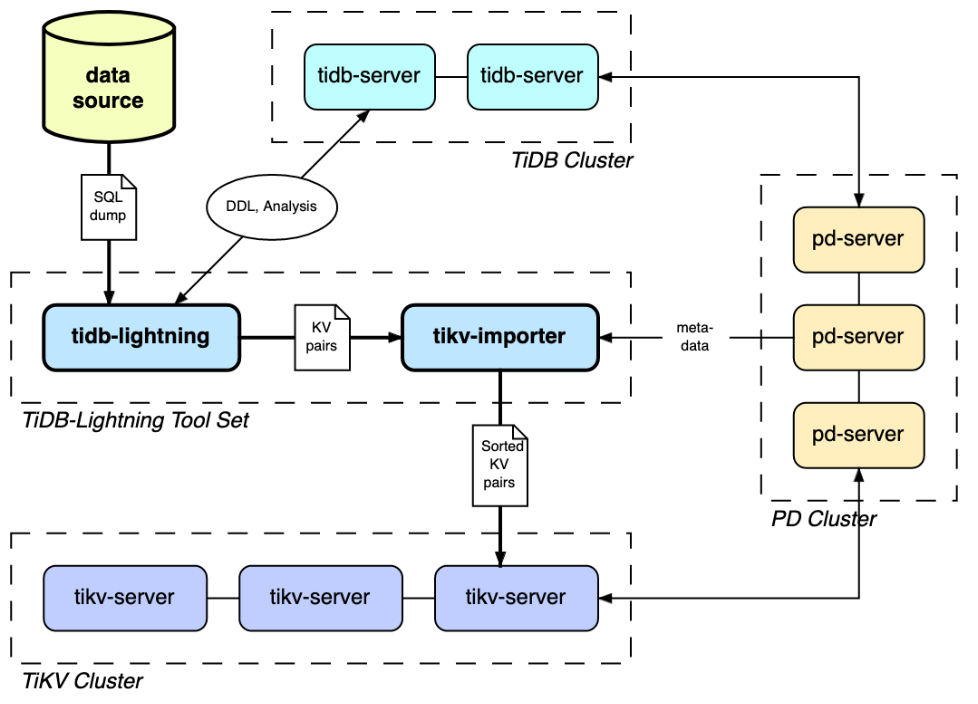
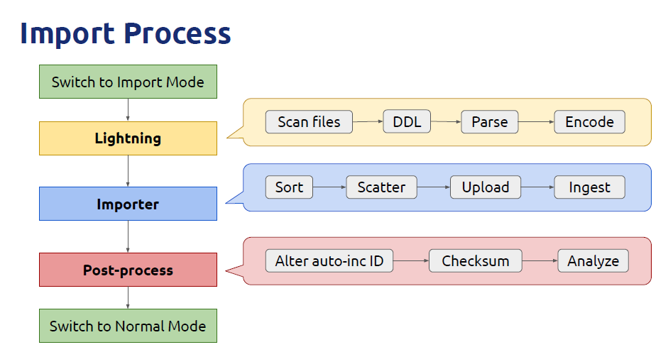
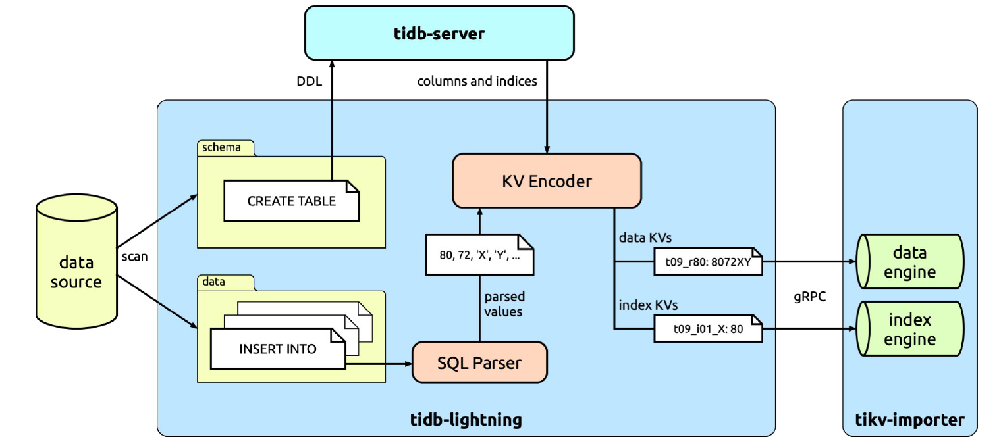
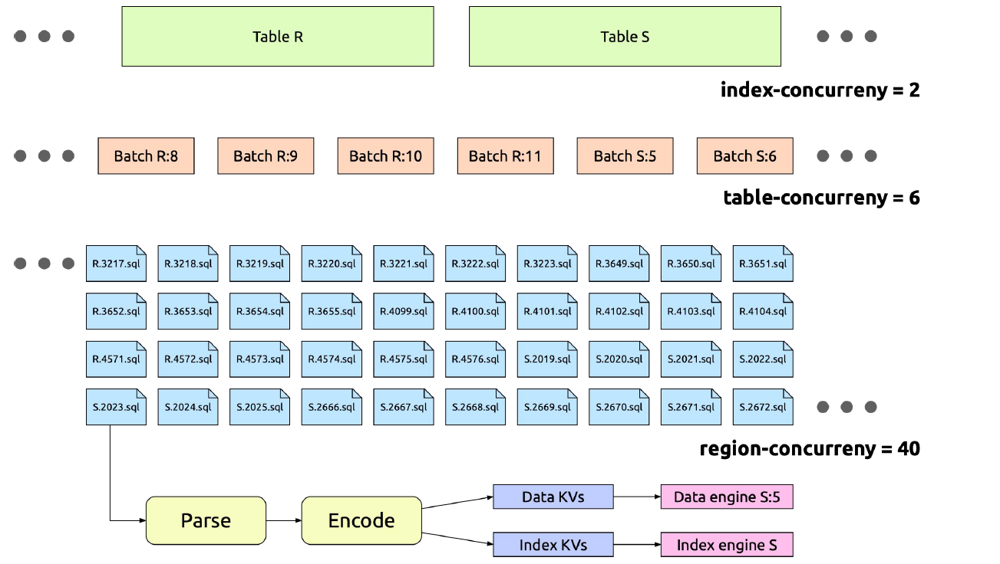
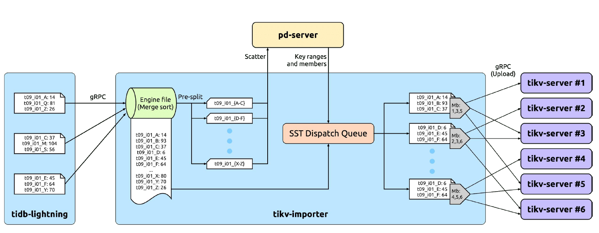
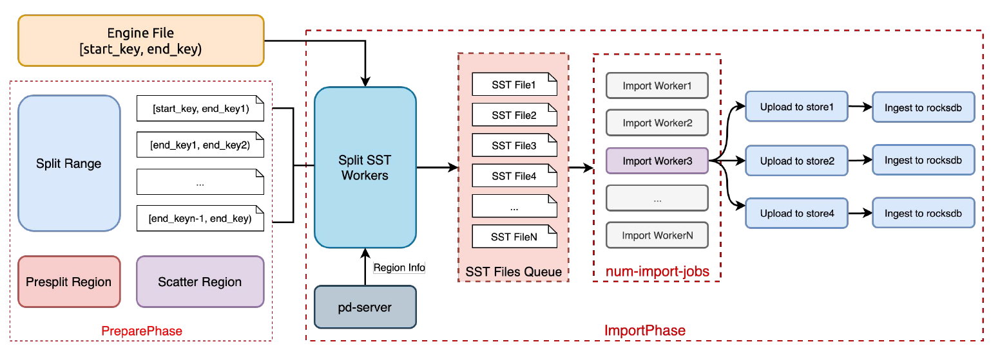
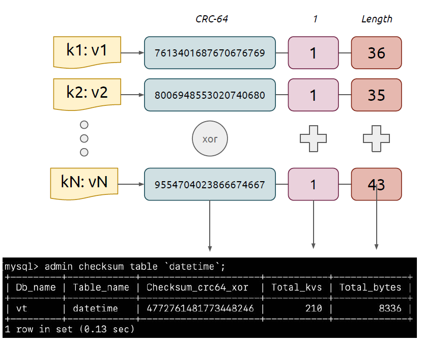
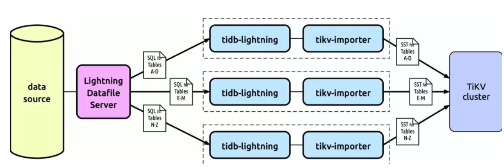

TiDB Lightning 简介
TiDB Lightning 是一个将全量数据高速导入到 TiDB 集群的工具，速度可达到传统执行 SQL 导入方式的至少 3 倍、大约每小时 100 GB，有以下两个主要的使用场景：一是大量新数据的快速导入；二是全量数据的备份恢复。目前，支持 Mydumper 或 CSV 输出格式的数据源。你可以在以下两种场景下使用 Lightning：
- 迅速导入大量新数据。
备份恢复所有数据。
TiDB Lightning 整体架构
架构组件
TiDB Lightning 主要包含两个部分：
tidb-lightning（“前端”）：主要完成适配工作，通过读取数据源，在下游 TiDB 集群建表、将数据转换成键值对（KV 对）发送到 tikv-importer、检查数据完整性等。
- tikv-importer（“后端”）：主要完成将数据导入 TiKV 集群的工作，对 tidb-lightning 写入的键值对进行缓存、排序、切分操作并导入到 TiKV 集群。
架构图

导入流程图

TiDB Lightning 整体工作原理
- 在导数据之前，tidb-lightning 会自动将 TiKV 集群切换为“导入模式” (import mode)，优化写入效率并停止自动压缩。
- tidb-lightning 会在目标数据库建立架构和表，并获取其元数据。
- 每张表都会被分割为多个连续的区块，这样来自大表 (200 GB+) 的数据就可以用增量方式导入。
- tidb-lightning 会通过 gRPC 让 tikv-importer 为每一个区块准备一个“引擎文件 (engine file)”来处理键值对。tidb-lightning会并发读取 SQL dump，将数据源转换成与 TiDB 相同编码的键值对，然后发送到 tikv-importer 里对应的引擎文件。
- 当一个引擎文件数据写入完毕时，tikv-importer 便开始对目标 TiKV 集群数据进行分裂和调度，然后导入数据到 TiKV 集群。引擎文件包含两种：数据引擎与索引引擎，各自又对应两种键值对：行数据和次级索引。通常行数据在数据源里是完全有序的，而次级索引是无序的。因此，数据引擎文件在对应区块写入完成后会被立即上传，而所有的索引引擎文件只有在整张表所有区块编码完成后才会执行导入。
- 整张表相关联的所有引擎文件完成导入后，tidb-lightning 会对比本地数据源及下游集群的校验和 (checksum)，确保导入的数据无损，然后让 TiDB 分析 (ANALYZE) 这些新增的数据，以优化日后的操作。同时，tidb-lightning 调整 AUTO_INCREMENT 值防止之后新增数据时发生冲突。表的自增 ID 是通过行数的上界估计值得到的，与表的数据文件总大小成正比。因此，最后的自增 ID 通常比实际行数大得多。这属于正常现象，因为在 TiDB 中自增 ID 不一定是连续分配的。
在所有步骤完毕后，tidb-lightning 自动将 TiKV 切换回“普通模式” (normal mode)，此后 TiDB 集群可以正常对外提供服务。
导入模式
Lightning在导入阶段需要单独使用集群，设置集群来提高速度。在开始阶段切换"导入模式"，
在TiKV上增加后台任务数，使并行接收更多的静态表存储文件(SST)。
- 移除write stall triggers，使写速度优先于读速度。
在导入数据完成后,Lightning会自动切换集群至"Normal Mode"。
Lightning
Lightning架构图

Lightning工作原理
首先，Lightning 会扫描 SQL 备份，区分出结构文件（包含 CREATE TABLE 语句）和数据文件（包含 INSERT 语句）。结构文件的内容会直接发送到 TiDB，用以建立数据库构型。
然后 Lightning 就会并发处理每一张表的数据。这里我们只集中看一张表的流程。每个数据文件的内容都是规律的 INSERT 语句，像是：
INSERT INTO tbl VALUES (1, 2, 3), (4, 5, 6), (7, 8, 9);
INSERT INTO tbl VALUES (10, 11, 12), (13, 14, 15), (16, 17, 18);
INSERT INTO tbl VALUES (19, 20, 21), (22, 23, 24), (25, 26, 27);
Lightning 会作初步分析，找出每行在文件的位置并分配一个行号，使得没有主键的表可以唯一的区分每一行。Lightning 会直接使用 TiDB 实例来把 SQL 转换为 KV 对，称为「KV 编码器」。与外部的 TiDB 集群不同，KV 编码器是寄存在 Lightning 进程内的，而且使用内存存储，所以每执行完一个 INSERT 之后，Lightning 可以直接读取内存获取转换后的 KV 对（这些 KV 对包含数据及索引），得到 KV 对之后便可以发送到 Importer。
Lightning并发

batch-size: 对于很大的单表，比如 5T，如果一次行导入到一个 Engine File，可能会因为 Importer 磁盘空间不足，最终导致该表导入失败，所以 Lightning会按照 batch-size 的配置大小对一个大表进行切分，导入过程中，一个 batch使用一个 Engine File；batch-size 不应该小于 100G，太小的 batch-size 会使region balance 和 leader balance 很高，导致 region 在 TiKV 之间频繁调度，占用网络资源；
table-concurrency: 控制多少个 batch 同时进行导入，每个 table 里面会按照batch-size 配置切分成多个 batch；
index-concurrency: 控制同时有多少个 Index Engine File，table-concurrency+ index-concurrency 的总和必须小于 Importer 的 max-open-engines 配置；
io-concurrency: 多个 IO 并发访问磁盘，随着并发度提高，磁盘内部缓存容量有限，会导致频繁 cache miss，导致 IO 的延迟加大，不建议调整太大；
block-size: Lightning 会一次性读取一个 block-size 的大小，然后进行kvencode,默认64K；
region-concurrency: 每个 batch 内部要进行 pipeline working： read dumpfiles -> encode kv -> send to importer ；
Read dump files 需要使用 io，使用 io-concurrency 控制并发读取
encode 需要使用 cpu，主要跟 region-conconcurrency 配置有关，例如 region-concurrency = 60，一次 encode 耗时 50ms，那么每秒只能进行 20 次 encode，block-size 为 64K，则单核每秒只能 encode 1.28M，region-concurrency = 60，encode 的总速度大约为 75MB/s
Importer
Importer架构图

Importer工作原理
因异步操作的缘故，Importer 得到的原始 KV 对注定是无序的。所以，Importer 要做的第一件事就是要排序。这需要给每个表划定准备排序的储存空间，我们称之为 engine file。
对大数据排序是个解决了很多遍的问题，我们在此使用现有的答案：直接使用 RocksDB。一个 engine file 就相等于本地的 RocksDB，并设置为优化大量写入操作。而「排序」就相等于将 KV 对全写入到 engine file 里，RocksDB 就会帮我们合并、排序，并得到 SST 格式的文件。
这个 SST 文件包含整个表的数据和索引，比起 TiKV 的储存单位 Regions 实在太大了。所以接下来就是要切分成合适的大小（默认为 96 MiB）。Importer 会根据要导入的数据范围预先把 Region 分裂好，然后让 PD 把这些分裂出来的 Region 分散调度到不同的 TiKV 实例上。
最后，Importer 将 SST 上传到对应 Region 的每个副本上。然后通过 Leader 发起 Ingest 命令，把这个 SST 文件导入到 Raft group 里，完成一个 Region 的导入过程。
Importer并发

- max-open-engines: 表示 Lightning 可以在 Importer 同时打开 Engine 的数量，如果是单个 Lightning 实例，这个配置需要不小于 Lightning 中index-concurrency + table-concurreny 的大小，如果是多个 Lightning 实例，则不能小于所有实例的 index-concurrency + table-concurreny 总和；Engine会消耗磁盘空间，Data Engine 的磁盘空间大小为 Lightning 中 batch-size 的大小，Index Engine 的大小参考前文估算方式，需要根据 Importer 机器的磁盘容量来合理配置本参数；
- num-import-jobs: 一个 Lightning batch-size 的数据写入到一个 Engine 之后，会使用 Import 过程导入到 TiKV，这个参数控制同时进行导入的线程数量，通常使用默认配置即可；
- region-split-size: 一个 Engine File 可能是 100G，不能一次性导入到 TiKV，所以会把 Engine File 切分成多个更小的 SST 文件，SST 文件不会超过这个大小，不建议低于 512MB，SST 切分过小，会导致 Ingest 的吞吐量小。
校验检查

我们传输大量数据时，需要自动检查数据完整，避免忽略掉错误。Lightning 会在整个表的 Region 全部导入后，对比传送到 Importer 之前这个表的 Checksum，以及在 TiKV 集群里面时的 Checksum。如果两者一样，我们就有信心说这个表的数据没有问题。
一个表的 Checksum 是透过计算 KV 对的哈希值（Hash）产生的。因为 KV 对分布在不同的 TiKV 实例上，这个 Checksum 函数应该具备结合性；另外，Lightning 传送 KV 对之前它们是无序的，所以 Checksum 也不应该考虑顺序，即服从交换律。也就是说 Checksum 不是简单的把整个 SST 文件计算 SHA-256 这样就了事。
我们的解决办法是这样的：先计算每个 KV 对的 CRC64，然后用 XOR 结合在一起，得出一个 64 位元的校验数字。为减低 Checksum 值冲突的概率，我们同时会计算 KV 对的数量和大小。会执行2次来计算并比对表中3个指标的和：
- 一次是在Lightning encode后
- 一次是在TiDB执行SQL命令：
- ADMIN CHECKSUM TABLE
xxxx;
- ADMIN CHECKSUM TABLE
若速度允许，将来会加入更先进的 Checksum 方式。
分析与更新自增值
Lightning在检查数据完整后会进行重新计算表的统计信息，支持查询计划优化，及更新表的自增值。
执行：
- ANALYZE TABLE
xxxx; - ALTER TABLE
xxxxAUTO_INCREMENT=123456;并行导入

尽管我们可以不断的优化程序代码，单机的性能总是有限的。要突破这个界限就需要横向扩展：增加机器来同时导入。如前面所述，只要每套 TiDB-Lightning Toolset 操作不同的表，它们就能平行导进同一个集群。可是，现在的版本只支持读取本机文件系统上的 SQL dump，设置成多机版就显得比较麻烦了（要安装一个共享的网络盘，并且手动分配哪台机读取哪张表）。我们计划让 Lightning 能从网路获取 SQL dump（例如通过 S3 API），并提供一个工具自动分割数据库，降低设置成本。
在线导入
TiDB-Lightning 在导入时会把集群切换到一个专供 Lightning 写入的模式。目前来说 Lightning 主要用于在进入生产环境之前导入全量数据，所以在此期间暂停对外提供服务还可以接受。但我们希望支持更多的应用场景，例如恢复备份、储存 OLAP 的大规模计算结果等等，这些都需要维持集群在线上。所以接下来的一大方向是考虑怎样降低 Lightning 对集群的影响
使用限制
- Lightning 只适用于初次全量导入，导入开始前，请确保一下两点：
- 导入前相关 table 需要清空
- 导入过程中 table 不能有其他业务写入
● 一个 table 只能一个 Lightning 实例导入，不能多个 Lightning 实例导入同一张表；同一个数据源可以使用多个 Lightning 实例并行导入，具体方式是通过白名单配置，导入不同的表；
● 多机部署 Lightning Toolset，其中 Lightning 和 Importer 的数量比例主要由 encode的速度来搭配，由于万兆网卡的限制，Importer 上传到 TiKV 的速度最大约为300MB/s，如果一个Lightning 写入 Importer 速度超过 Importer 上传到 TiKV 的速度会造成 Lightning 等待，例如一个 Lightning 处理速度为 80MB/s ，则可以使用 3 - 4个 Lightning 实例搭配一个 Importer 进行导入（ 多个 lightning 配 1 个 importer 我们没有严谨测试过，目前仅限自己测试折腾，官方不负任何责任 )。
机器配置要求
- TiDB-Lightning / TiKV-Importer 均需要配备万兆网卡；对于万兆网卡，即使TiKV-Importer 网卡打满，因为 TiKV 三个副本需要上传，所以实际导入速度只有~300MB/s，如果是千兆网卡只有 ~30MB/s；
- TiDB-Lightning 对本地磁盘没有硬性要求，如果长时间运行，需要保证磁盘空间能保存日志即可；
- TiDB-Importer 磁盘有一定要求，比如有 20 张表，其中有一张 5T 的大表，因为这张表的索引 KV pairs 会在 Importer 上进行全排序，再上传到 TiKV 中，所以需要保证Importer 的机器至少可以保存这个 Index Engine File，Engine File 的磁盘文件大小主要由表结构中索引数量定，一个大致的参考值：一个包含 5 个索引大小为 4T 的单表，索引的 Engine File 大致 ~2T，如果索引中的字段是 number 类型，Index Engine File 可能比较小；
- TiKV 集群容量比较保守的估算可以按照 size(SQL Files) * 4 来配置，比如 5T 的 SQL 文件，可以要求集群至少 20T，但是这个值有一定弹性范围，如果表内的重复数据比较多，最终 TiKV的压缩比会比较大，容量要求也相对比较小，比如陌陌 6.5T (5 个索引)的测试最终 TiKV 的大小只消耗了 6.6T，L5 的压缩比达到 7.0+，如果客户的确有需要使用 Lightning，但是没有那么高的配置条件，可以做一些估算后进行尝试。
量化指标
- io conc 不要太大，导致磁盘内部缓存大量 cache miss， 会影响顺序读的效果
如果整个 lightning -> importer pipeline working 没有阻塞的，有下面的一些资源使用
计算公式
- 万兆网卡 1Gb/s，如果 encode 速度达到 300MB/s，就会占用整个 importer 的带宽 ；bandwidth = encoded kv size * 3 replica
- Lightning 内存占用主要跟上面的 batch pipeline working 有关，但是不是持久占用，会自动回收； importer 占用跟 engine file count 有关，ram usage =(table conc + index conc) (write-buffer-size max-write-buffer-number)
- Importer 硬盘占用 ≈ total size of top N tables × 1.5, 其中 N = max(indexconc, table conc). 实际占用量与索引数量和类型相关。